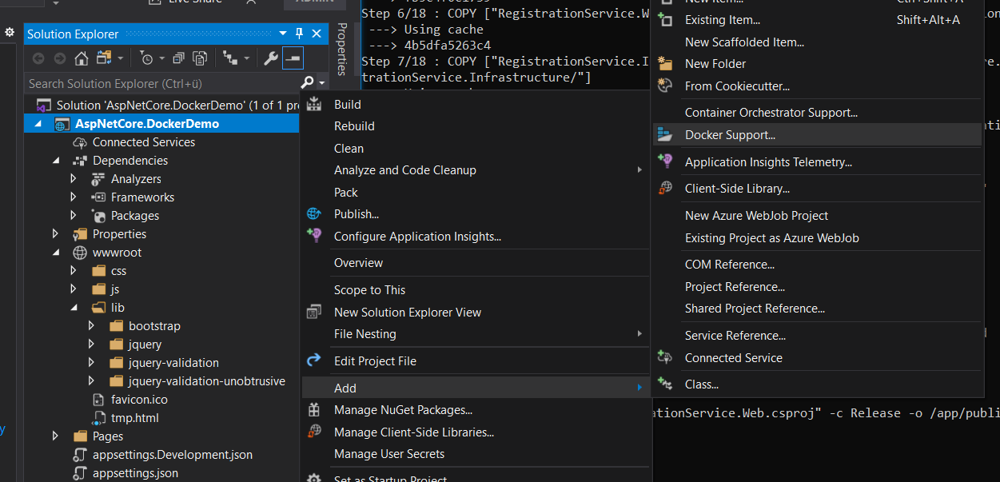

This is just a cheat sheet of commands and terminology for Docker and ASP.NET Core; it contains commands that you can find in the original cheat sheet, plus a Dockerfile for ASP.NET Core and a quick guide on how to created one from Visual Studio. Hopefully, both developers that are in the process of getting into the containerize world with Docker and developers that are already in but need a quick recap will find it useful.
| Term | Short explanation |
|---|---|
| Docker | Docker is a set of platform as a service products that uses OS-level virtualization to deliver software in packages called containers. Download Docker for Windows here. |
| Image | An image, or more correct, a Docker container image is a lightweight, standalone, executable package of software that includes everything needed to run an application: code, runtime, system tools, system libraries and settings. |
| Container | A container image becomes a container at runtime when they run on Docker Engine |
| Docker Engine | Docker Engine is a container runtime that runs on various Linux (CentOS, Debian, Fedora, Oracle Linux, RHEL, SUSE, and Ubuntu) and Windows Server operating systems… |
| Docker Hub | Docker Hub is a service provided by Docker for finding and sharing container images with your team. |
| Dockerfile |
A Dockerfile is a text document that contains all the commands a user could call on the command line to assemble an image.
|
Read more information about Docker Container Images and Docker Containers here.
Follows, a list of basic commands that you will regularly need. Run them using command line from the root of your application – where the Dockerfile should exists.
| Term | Short explanation |
|---|---|
docker pull |
Retrieve an image from a registry. If you specify only the repository name, Docker will download the image tagged latest from that repository on Docker Hub. e.g. docker pull mcr.microsoft.com/dotnet/core/aspnet:3.1 pulls the 3.1 runtime, where docker pull mcr.microsoft.com/dotnet/core/sdk pulls the latest .NET Core SDK.
|
docker build |
Create a new image by running a Dockerfile. User the -t flag to specify the name of the new image and don’t forget the . (build context for the source files for the COPY command)e.g. docker build -t image.name.for.my.app:v1 .
|
docker image list |
After pulling an image, view the images in your local registry with the docker image list command.
|
docker ps |
View active containers. Use the -a flag to view all.e.g. docker ps -a
|
docker run |
Run an image – it will become a container. Specify the option -p for port mapping (left hand side local port, right hand side port exposed by docker) and -d to run it as a background service.Speficy the --name option to set the name of the container.e.g. docker run -p 8080:80 -d --name container.name image.name.for.my.app
|
docker stop |
Stop an active container by specifying the container ID. Get that with the docker ps commande.g. docker stop elegant_ramanujan
|
docker start |
Restart a stopped container. e.g. docker start elegant_ramanujan
|
docker container rm |
Remove a stopped container. Add the -f flag to force remove a running container (not a graceful shutdown)e.g. docker container rm -f elegant_ramanujan
|
docker image rm |
Remove an image. There is no force flag here, all containers using this image must be stopped. e.g. docker image rm mcr.microsoft.com/dotnet/core/samples:aspnetapp
|
Dockerfile sampleLiving in the root of the application, a Dockerfile is just a plain text file; you can either use the following command to create it in Windows, or anyway you like: copy NUL Dockerfile. The sample below contains everything necessary to build and run an image. Comments above each command attempt to provide a bit of clarity:
# This is a sample Dockerfile for building and running ASP.NET Core applications
# This is part of the cheat sheet at https://blog.georgekosmidis.net/2020/06/12/docker-cheat-sheet-for-dotnet-core/
# Pull ASP.NET Core 3.1 runtime and give the name 'base'
# More info on 'FROM' instruction here: https://docs.docker.com/engine/reference/builder/#from
FROM mcr.microsoft.com/dotnet/core/aspnet:3.1 AS base
# Set the ports where the container listens at runtime
# More on the 'EXPOSE' instruction here: https://docs.docker.com/engine/reference/builder/#workdir
EXPOSE 80
EXPOSE 443
# Pull the ASP.NET Core 3.1 SDK and give the name 'build'
# The SDK runs an app on ports 5000 and 5001, that's why we also need runtime
FROM mcr.microsoft.com/dotnet/core/sdk:3.1 AS build
# Set the Working Dir to '/src'. This is where the source code is
# The WORKDIR instruction sets the working directory for any
# RUN, CMD, ENTRYPOINT, COPY and ADD instructions that follow
# More on the 'WORKDIR' instruction here: https://docs.docker.com/engine/reference/builder/#workdir
WORKDIR /src
# Copy your projects
# More on the 'COPY' instruction here: https://docs.docker.com/engine/reference/builder/#copy
COPY ["Name.Of.Your.Project.csproj", "Name.Of.Your.Project/"]
COPY ["Dependancy.Of.Your.Project.csproj", "Dependancy.Of.Your.Project/"]
# Run in a shell, in this case run 'dotnet restore'
# More the 'RUN' instruction here: https://docs.docker.com/engine/reference/builder/#run
RUN dotnet restore "Name.Of.Your.Project/"Name.Of.Your.Project.csproj"
WORKDIR "/src/"Name.Of.Your.Project"
COPY . .
RUN dotnet build "Name.Of.Your.Project.csproj" -c Release -o /app/build
# Run the publish command using the SDK named as 'build'
FROM build AS publish
RUN dotnet publish "Name.Of.Your.Project.csproj" -c Release -o /app/publish
# Pull 'base' image and name it as 'final' to allow pull access for publish
FROM base AS final
WORKDIR /app
COPY --from=publish /app/publish .
# Set the entry point, in other words, what to run!
# More on the 'ENTRYPOINT' instruction here https://docs.docker.com/engine/reference/builder/#entrypoint
ENTRYPOINT ["dotnet", "Name.Of.Your.Project.dll"]If it happens to have a Visual Studio around, just right click on your main project, select ‘Add’ and then ‘Docker Support…’:
.
Usually, for ASP.NET Core, I choose ‘Linux’ as Operating System; at the end it comes cheaper if you want to host it, for example, in Azure.